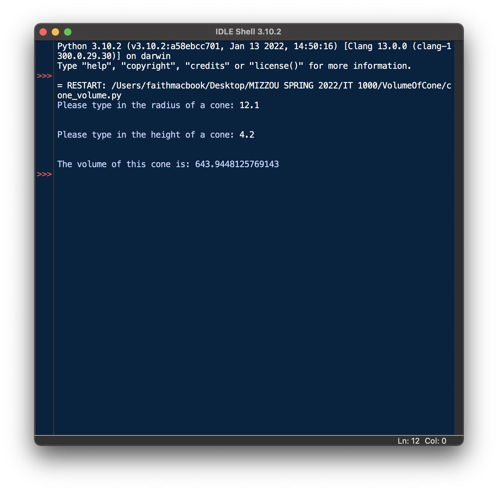

Return to Home
Other pages: HTML | Turtle Graphics | JavaScript
This is a page about one of my first coding projects for INFOTEC 1000. One of the first things I ever coded for this course was a simple program in Python called Volume of a Cone.
For reference, Python is a progamming language that uses indentation for readability. The logo is seen below:

Back to what I was saying, this code is supposed to calculate the volume of a cone. The project is supposed to teach us:
The code I wrote is shown below:
import math
def main():
# radius input
while True:
try:
radius = float(input("Please type in the radius of a cone: "))
except ValueError:
print("Please enter only a numerical value for the radius.")
continue
if (radius <= 0):
print("Please enter a positive value for the radius.")
continue
else:
break
print("\n")
# height input
while True:
try:
height = float(input("Please type in the height of a cone: "))
except ValueError:
print("Please enter only a numerical value for the height.")
continue
if (height <= 0):
print("Please enter a positive value for the height.")
continue
else:
break
print("\n")
# main calculation
volume = math.pi * (radius**2) * (height/3)
print("The volume of this cone is: ", end="")
print(volume)
main()
The output of the code would result in this:  This sums up my introduction to the Python experience. Thank you for reading!